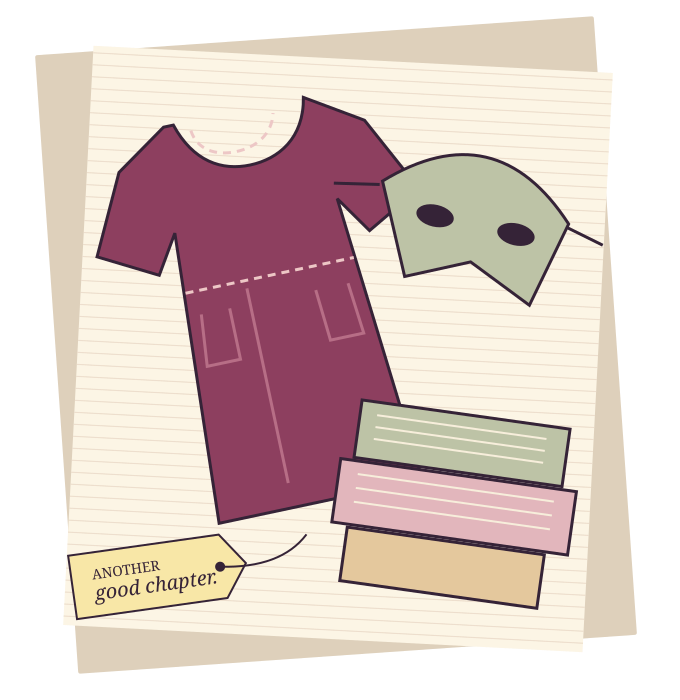

Make an entrance.
Costumes and accessories are part of the shop’s story. Check its Facebook page for current announcements.
See the shop’s posts ↗A second act for
the things you love.
SILER CITY, NORTH CAROLINA
A costume for the occasion.
A little something for every day.
A family and children’s resale shop on East Raleigh Street, with costumes, vintage clothing, books and other finds to explore.
Find your kind of find
A FEW PLACES TO START
Explore the shop’s publicly described categories. For a particular item or size, ask the shop before making the trip.
Costumes and accessories are part of the shop’s story. Check its Facebook page for current announcements.
See the shop’s posts ↗Family and children’s resale, vintage clothing and everyday possibilities. Selection and sizes need a direct check.
Ask about an item ↗Books, toys, games and home decor appear in the county’s shop description. No live inventory is shown here.
Find the shop ↗These are category ideas, not products for sale. Nothing can be purchased or reserved through this concept.
COME HAVE A LOOK
222 East Raleigh Street
Siler City, NC 27344
Opening hours and seasonal schedules have not been confirmed for this concept. Check the shop’s current Facebook information or call before travelling.
Visit Reprise and Disguise on Facebook ↗Accepted items, arrangements and current policies have not been confirmed here. Please ask the shop directly; this page does not accept items or inquiries.
Contact the shop about its current selection. The illustrations and categories on this page do not represent available inventory.
Business identity, categories and contact details were checked on October 26, 2026 against the business’s public profile and county visitor listing. Copy and visual identity are proposed by Manna Agency. Business-owner approval, current policies and hours remain outstanding.